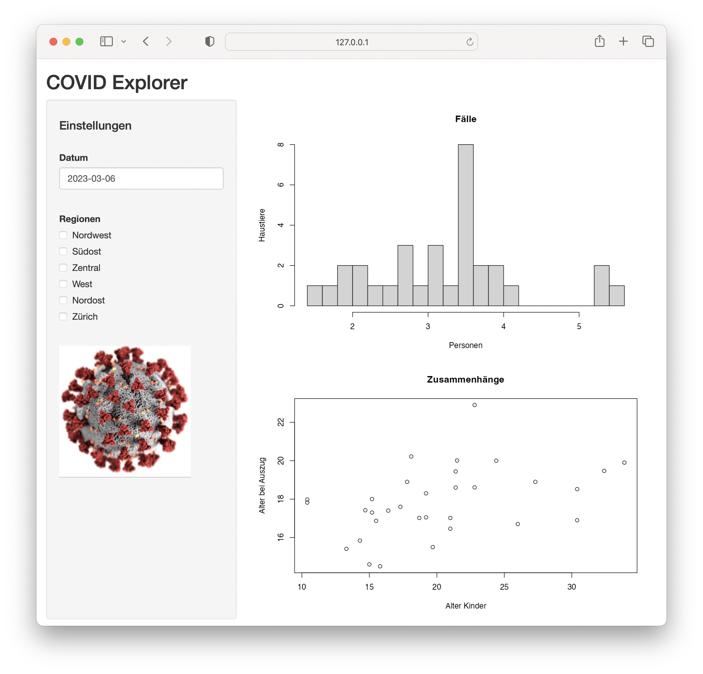

Wettbewerb
Dashboards mit
Shiny
The
R Bootcamp @ CSS


from unsplash.com
Überblick
Zeit eure neuen Skills praktisch anzuwenden. In diesem Teil des Kurses werdet ihr eure Kreativität und Expertise brauchen, um ein COVID-19 Dashboard zu erstellen. Versucht die nützlichsten Interfaces zu erstellen um Usern eures Dashboards die Analyse der Daten zu ermöglichen.
Übrigens, es gibt üç´üç´üç´ zu gewinnnen.
Der Wettbewerb endet in…
Auftrag
Zur Vorbereitung auf die nächste Pandemie sucht das Bundesamt für Gesundheit (BAG) nach geeigneten Online-Tools, um das Infektionsgeschehen im Blick zu behalten. Nun seid ihr gefragt! Es gibt einen Datensatz `covid.csv`, dieser stammt vom BAG und enthält wöchentliche Zahlen zu COVID-19 Infektionen in der Schweiz von Februar 2020 bis Februar 2023. Die Infektionszahlen sind sowohl für die gesamte Schweiz als auch pro Kanton verfügbar. Der Datensatz schlüsselt die Infektionszahlen zudem nach Altersgruppen auf.
A - Vorbereitung
Erstelle einen neuen Ordner
competitionin deinemTheRBootcampProjektordner.Erstelle darin ein neues Skript für deine App und speichere es unter dem Namen
CovidExplorer.R.Lade das
shinyPaket und alle weiteren Pakete, die du verwenden möchtest.Lade den Datensatz
covid.csv. Er sollte imdataOrdner enthalten sein. Im TabDatensatzfindest du Informationen zu den Variablen.Optional kannst du einen Datensatz herunterladen, der geographische Grenzen der Schweizer Kantone beinhaltet. Du kannst ihn hier mit Rechtsklick “Ziel speichern unter” downloaden: kantone.csv
library(shiny)
library(readr)
covid <- read_csv("covid.csv")
ui <- fluidPage(
)
server <- function(input, output, session) {
}
shinyApp(ui, server)B - Vorgehen
Du bist komplett frei, wie du dein Dashboard gestaltest.
Wenn du nach Inspirationen suchst, dann schau mal in den Tab
Inspiration.Nutze dein neu erlangtes Wissen aus den Übungen der letzten Tage und versuch es in der Praxis anzuwenden.
C - Wettbewerbsregeln
Das Ziel des Wettbewerbs ist es die überzeugenste, benutzerfreundlichste und schönste Dashboard-App zu erstellen.
Am Wettbewerb teilzunehmen erm√∂glicht dir die Chance viel üç´üç´üç´ zu gewinnen.
Du nimmst am Wettbewerb teil indem du deinen Ordner
competitionals.zipDatei komprimierst und an uns schickst. Lege alle Dateien, die deine App braucht, in diesencompetitionOrdner. Also z.B. alle verwendeten Datensätze, Bilder, R Skripte oder sonstige Dateien.Reiche deinen Beitrag ein indem Du deine
.zipDatei an unsere therbootcamp@gmail.com Mail Adresse schickst.Jeder Beitrag wird anonym beurteilt duch eine Jury bestehend aus den Kursteilnehmern und Kursteilnehmerinnen. Der Beitrag mit den meisten Punkten gewinnt. Die Beurteilung findet im Anschluss an den Kurs statt.
Wichtig: Entscheidend für den Erfolg sind verschiedene Faktoren: Benutzerfreundlichkeit, Funktionsumfang, Erkenntnisgewinn, Aussehen, usw.
Rating
Wir machen alle eingereichten Dashboards online verfügbar. Danach bekommt ihr einen Link zu einem Fragebogen in dem ihr abstimmen, welches Dashboard Schokolade gewinnt.
Inspiration
Layouts
Überlege dir, welches Layout du für deine App verwenden möchtest. Du könntest z.B. von Hand auf Papier eine Skizze anfertigen und das entsprechende Layout dann in Shiny umsetzen.
Hier sind nochmal ein paar Beispiele für Layouts aus dem Kurs zur Inspiration.
Beispiel 1
Das erste Beispiel nutzt das simple aber oft übersichtliche
sidebarLayout mit sidebarPanel und
mainPanel.
ui <- fluidPage(
titlePanel("COVID Explorer"),
sidebarLayout(
sidebarPanel(
# hier könnten einige Inputs platziert sein
),
mainPanel(
# und hier könnten Graphiken platziert sein
)
)
)
Beispiel 2
Das zweite Beispiel verwendet eine navbarPage mit verschiedenen Seiten (tabPanels), darin ein Grid Layout.
ui <- navbarPage(
"COVID Explorer",
tabPanel(
"Verlauf",
fluidRow(
column(
8,
# hier könnten Graphiken platziert sein
),
column(
4,
# und hier Inputs
)
)
),
tabPanel("Kantone"),
tabPanel("Karte"),
tabPanel("About")
)
Visualisierungen
Versuch dir anhand der Variablen im Datensatz zu überlegen, welche Visualisierungen am informativsten, bzw. interessantesten sind.
Hier ein paar Beispiele für Plots die interessant sein könnten, und die du natürlich auch als Ausgangslage nehmen kannst zum Anpassen.
Fälle über die Jahre in der Schweiz
Das erste Beispiel zeigt die wöchentliche Entwicklung der Fallzahlen in der gesamten Schweiz.
covid %>%
group_by(region, datum) %>%
summarise(anzahl = sum(anzahl),
summe = sum(summe),
population = sum(population, na.rm = TRUE)) %>%
filter(region == "CH") %>%
ggplot(aes(x = datum, y = anzahl)) +
geom_area(fill = "#ff0000", alpha = 0.5) +
geom_line(color = "#ff0000", linewidth = 1) +
labs(title = "COVID-19 Fälle pro Woche", subtitle = "ganze Schweiz") +
xlab("Datum") +
ylab("Fälle pro Woche") +
theme_minimal()Fallzahlen pro Kanton auf Schweizerkarte
Der nächste Plot zeigt eine Schweizerkarte und kummulierte Fallzahlen
pro Kopf je nach Kanton, und zwar für eine bestimmte Woche (hier die
erste im Datensatz). Dafür ist ein bisschen R Akrobatik nötig, um die
Daten dafür in die richtige Form zu bringen. Du brauchst dafür zudem den
Datensatz kantone.csv, in dem die Grenzen der Kantone
hinterlegt sind für den Plot.
covid_first_week <- covid %>%
group_by(region, datum) %>%
summarise(anzahl = sum(anzahl),
summe = sum(summe),
population = sum(population, na.rm = TRUE)) %>%
mutate(anzahl_pro_kopf = anzahl / population,
summe_pro_kopf = summe / population) %>%
filter(datum == min(datum)) %>%
select(region, summe_pro_kopf)
kantone %>%
left_join(covid_first_week, by = c("kanton_code" = "region")) %>%
ggplot(aes(x = x, y = y, group = kanton_id, fill = summe_pro_kopf)) +
geom_polygon(col = "grey50") +
theme_void() +
theme(legend.position = "none") +
scale_fill_gradient(low = "white", high = "red")Interaktivität
Denke darüber nach, welche Elemente du interaktiv gestalten möchtest. Auch dazu hier ein paar Beispiele, die Möglichkeiten sind aber natürlich endlos.
Woche auswählen
Du könntest z.B. den Benutzer die Woche auswählen lassen, für welche in einem Kartenplot die Fallzahlen oder kummulierten Fallzahlen angezeigt werden. Dieses Beispiel zeigt einen Slider, der eine Woche auswählen lässt, und ein zugehöriger Plot, der Daten bis zu dieser Woche darstellt.
library(shiny)
ui <- fluidPage(
sliderInput("datum",
"Fälle bis zum",
min = date("2020-02-24"),
max = date("2023-02-13"),
value = date("2020-02-24")),
plotOutput("plot")
)
server <- function(input, output, session) {
output$plot <- renderPlot({
covid %>%
group_by(region, datum) %>%
summarise(anzahl = sum(anzahl),
summe = sum(summe),
population = sum(population, na.rm = TRUE)) %>%
filter(region == "CH") %>%
filter(datum <= input$datum) %>%
ggplot(aes(x = datum, y = anzahl)) +
geom_area()
})
}
shinyApp(ui, server)Kantone auswählen
Eine weitere Dimension, die interaktiv verändert werden könnte, ist,
für welche Region sich ein User Daten anschauen möchte. Mittels
slectInput lassen sie sich einfach auswählen. Zudem ist in
diesem Beispiel ein Button definiert, der die Auswahl zurücksetzt.
Alternativ könntest du überlegen die Kantonauswahl über die
Schweizerkarte zu implementieren.
library(shiny)
ui <- fluidPage(
selectInput("regionen", "Regionen",
choices = c("AG", "AI", "AR", "BE", "BL", "BS",
"FR", "GE", "GL", "GR", "JU", "LU",
"NE", "NW", "OW", "SG", "SH", "SO",
"SZ", "TG", "TI", "UR", "VD", "VS",
"ZG", "ZH", "CH"),
multiple = TRUE),
actionButton("region_zurücksetzen", "Regionen zurücksetzen",
icon = icon("times"))
)
server <- function(input, output, session) {
observeEvent(input$region_zurücksetzen, {
updateSelectInput(inputId = "regionen", selected = character(0))
})
}
shinyApp(ui, server)The sky is the limit…
Dies waren nur ein paar Beispiele um eure Covid Explorer Entwicklung zu inspirieren, setzt eure eigenen Ideen um, oder passt die Beispiele an um sie besser zu machen.
Datensätze
covid.csv
Der Datensatz covid.csv basiert auf einem Datensatz vom
Bundesamt für Gesundheit (BAG) und kann von https://opendata.swiss/
heruntergeladen werden. Die Nutzungsbedingungen sehen vor, dass die
Quelle (Bundesamt für Gesundheit) angegeben wird, dies sollte auch in
eurer App geschehen. Der Datensatz ist für den Kurs von uns angepasst
worden, sodass die Arbeit damit in R für euch einfacher wird.
Inhaltlich bekommt ihr in dem Datensatz wöchentliche Fallzahlen basierend auf positiven COVID Tests. Zudem sind die Fallzahlen nach Altersgruppen und Region aufgeschlüsselt. Das bedeutet, dass eine Zeile im Datensatz jeweils Fallzahlen (oder kummulierte Fallzahlen, oder die Population) für die Altersgruppe und Region in dieser Woche angibt, welche in dieser Zeile stehen.
Schauen wir uns als Beispiel die dreizehnte Zeile im Datensatz an:
covid %>% slice(13)# A tibble: 1 × 6
altersgruppe region datum anzahl summe population
<chr> <chr> <date> <dbl> <dbl> <dbl>
1 20 - 29 CH 2020-03-02 42 58 1027732Bedeutet: In der gesamten Schweiz wurden in der Woche beginnend am 2. März 2020 42 positive COVID-Tests an Personen zwischen 20 und 30 Jahren gemeldet, bis und mit dieser Woche waren es in der gleichen Altersgruppe in der gesamten Schweiz total 58 Fälle
| Name | Bedeutung |
|---|---|
altersgruppe |
Altersgruppe, auf die sich die Daten in dieser Zeile beziehen. |
region |
Region auf die sich die Daten in dieser Zeile beziehen.
CH oder einer von 26 Kantonen. |
datum |
Datum, an dem die Woche beginnt, für welche diese Zeile Daten liefert. |
anzahl |
Anzahl COVID-19 Fälle, welche in dieser Woche in dieser Region für diese Altersgruppe gemeldet wurden. |
summe |
Anzahl COVID-19 Fälle, welche bis zu dieser Woche in dieser Region für diese Altersgruppe insgesamt gemeldet wurden. |
population |
Anzahl Personen in dieser Region und dieser Altersgruppe. |
kantone.csv
| Name | Bedeutung |
|---|---|
kanton |
Kantonsname |
kanton_id |
Kantons-id (mehrere pro Kanton, da manche Kantone “Inseln” haben) |
kanton_code |
Kantonskürzel (z.B. ZH, AG, LU, usw.) |
x |
x-Koordinate |
y |
y-Koordinate |